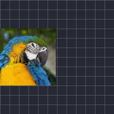

Echo na keyframe

Gumuguhit ng mga kopya ng layer gaya ng ilang sandali ang nakalipas, sumusunod sa animation nito.
Gumuguhit ang Echo na keyframe ng mga kopya ng layer gaya ng itsura nito ilang sandali ang nakalipas, kaya nag-iiwan ng bakas ang gumagalaw na layer. Ang Segundo ay kung gaano kalayo sa nakaraan ang mga kopya, ang Bilang ay kung ilan sila, ang Alpha ay kung gaano sila kalinaw, at pinipili ng Composite kung Sa likod o Sa ibabaw ng layer sila.
Mga Setting
| Setting | Uri | Saklaw | Default |
|---|---|---|---|
| Segundo | Numero | -60 hanggang 60 | 0.5 |
| Bilang | Numero | 0 hanggang 20 | 1 |
| Alpha | Numero | 0 hanggang 1 | 1 |
| Composite | Pagpipilian | Sa likod, Sa ibabaw | Sa likod |
| Estilo | Pagpipilian | Klasiko, Karaniwan | Karaniwan |